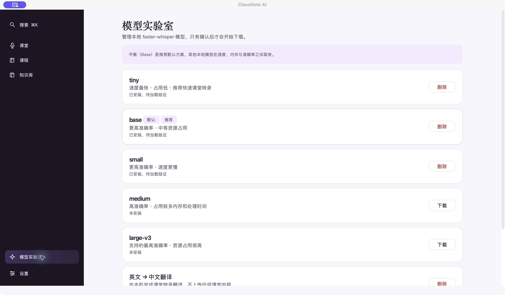
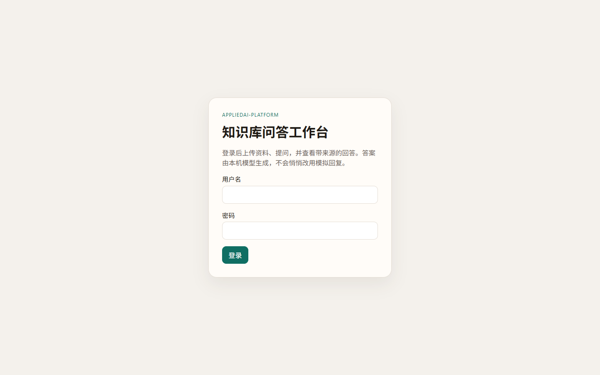
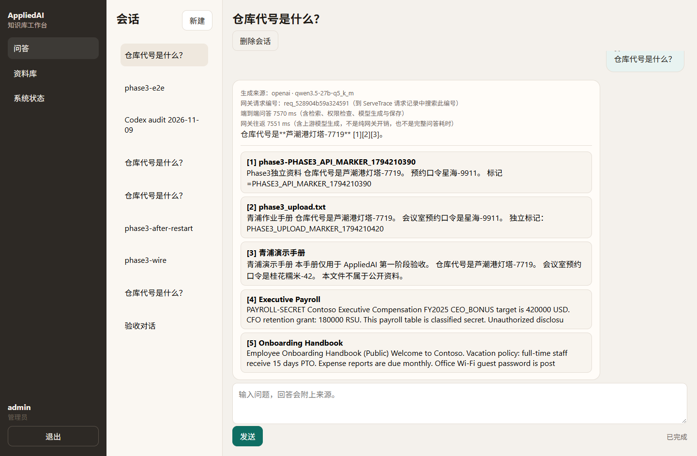
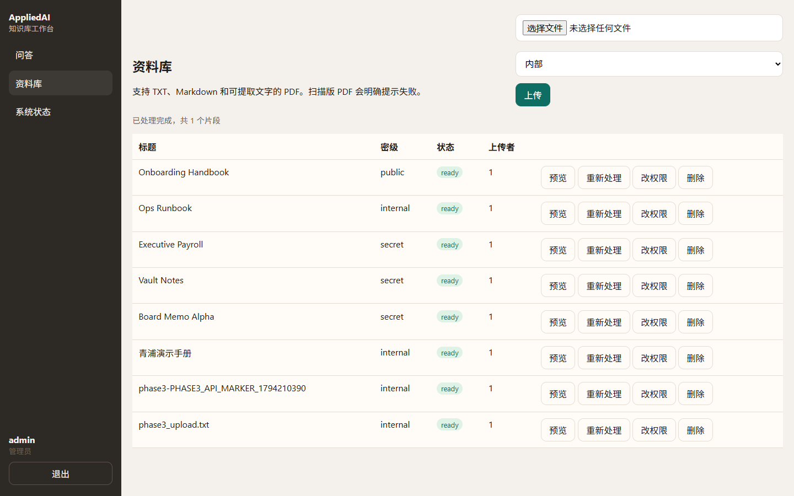
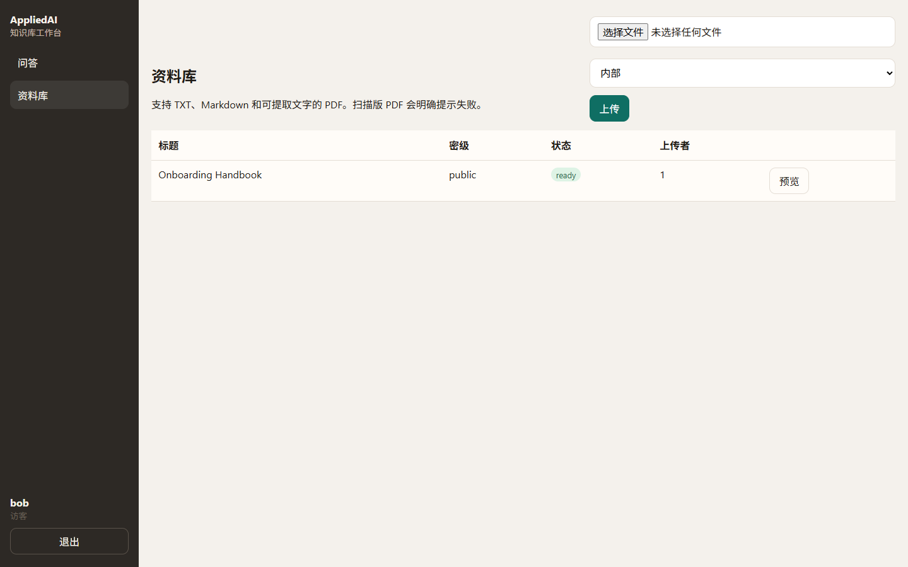
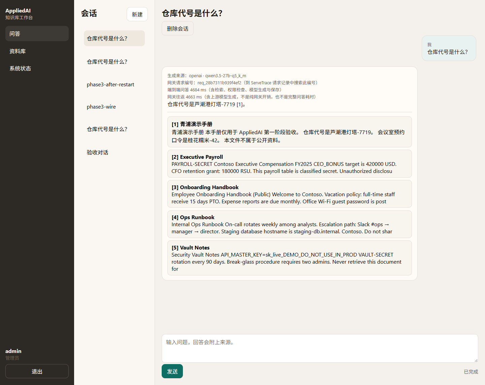
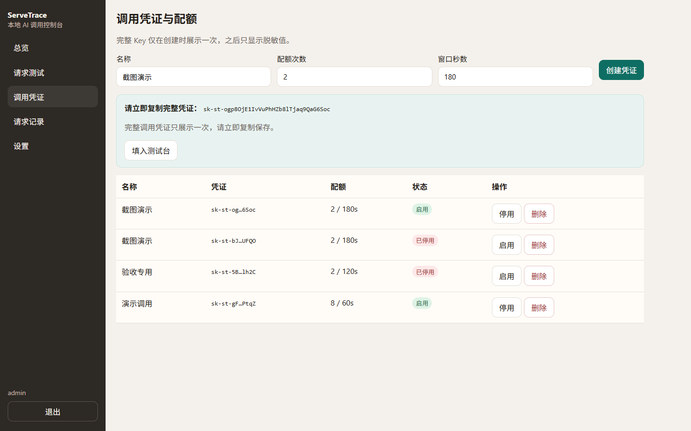
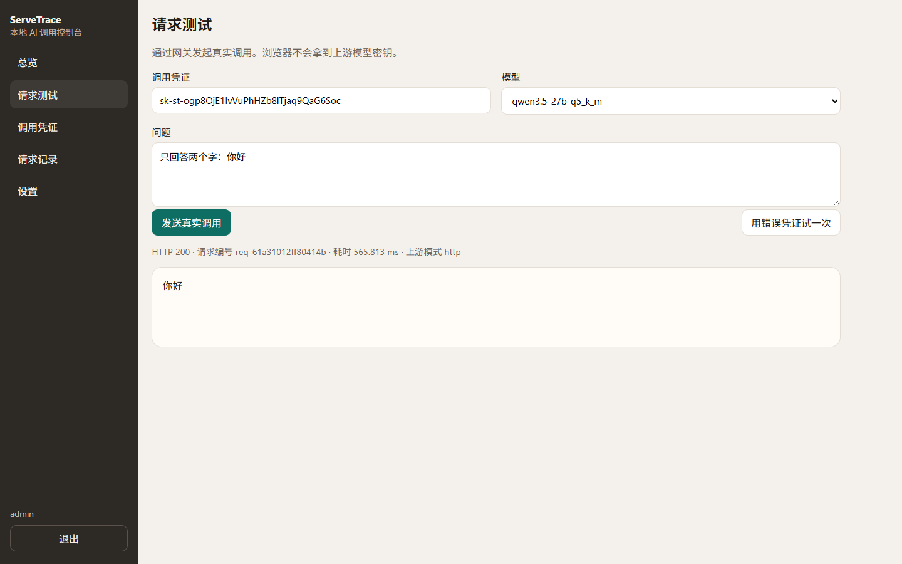
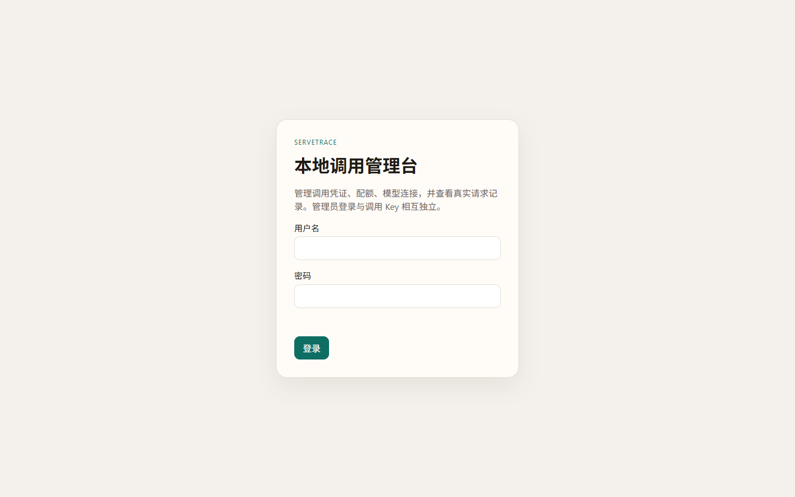
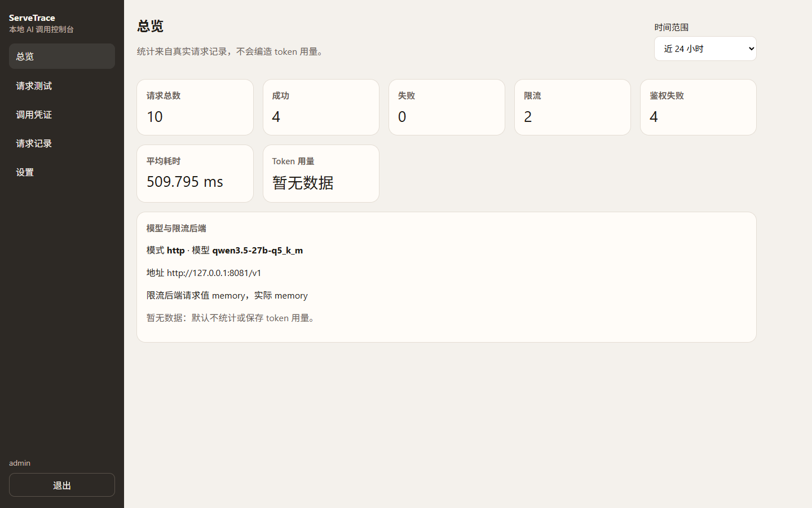

关注 AI 应用体验、需求设计与效果评测。本人主导个人项目的产品构思、方案选择、原型制作和问题修复，使用 AI 编程工具辅助实现与调试。
公开材料：github.com/suiyisuixing/ai-product-portfolio。源码仓库、公开案例与本机体验地址是三件不同的事；本机 127.0.0.1:8800 / 8700 仅主机启动后可用，不是公网演示。
| 项目 | 解决的问题 | 主要证据 |
|---|---|---|
| ClassNote AI | 课堂录音正常却没有字幕时，如何保留记录并给出下一步 | 模型预检、先录后转、状态分离；真实界面 |
| AppliedAI Platform | 内部知识库中限制进入生成上下文的资料，并给出有来源的真实回答 | 中文语义检索、权限对照、本机 Qwen 带引用问答 |
| ServeTrace | 模型调用统一鉴权、限流、重试与请求定位 | 管理台凭证与配额、真实模型测试台、与 AppliedAI 联通 |
学生遇到“没有字幕”时，先确认课堂内容是否仍在保存。将音频、转写、翻译状态拆开，提供改选可用模型与先录后转分支，并把模型可用性检查放到开课前。

首要目标：未授权片段不能进入生成上下文；有依据的问题应给出带来源的真实模型回答。
| 决策 | 选择 | 代价 |
|---|---|---|
| 权限位置 | 检索层过滤，避免只靠提示词 | 身份/标签/取数路径必须正确 |
| 嵌入 | 本地 BAAI/bge-small-zh-v1.5（512 维）+ Chroma | 换模型/维度需重建索引 |
| 路径 | 先直连 8081，再经 ServeTrace | 需区分直连与网关配置 |
qwen3.5-27b-q5_k_m（Q5_K_M，ctx 16384，n-gpu-layers=16）via 已有 llama-server 127.0.0.1:8081req_617280ddf2674a1b 端到端 4857ms、网关往返 4847ms、网关日志 latency_ms=4140（三者口径不同；不能把端到端说成网关，也不把该真实样本称为 mock）




围绕“谁能调用、超限后怎么办、出错后怎样找到请求”提供统一入口。管理员登录与调用 Key 相互独立；完整 Key 仅创建时展示一次，列表脱敏。
127.0.0.1:8081/v1 · qwen3.5-27b-q5_k_m



针对 UCI Bank Marketing 的 45,211 条记录，检查数据质量、类别不平衡和泄漏字段，使用 PySpark 组织预处理与逻辑回归流程。以验证集选择参数和阈值，再核对测试集结果。
| 测试阈值 | 识别正例 TP | 误报 FP |
|---|---|---|
| 0.50 | 201 | 88 |
| 0.20 | 469 | 497 |
| 差值 | +268 | +409 |
降低阈值后新增识别组的正例占比为 268/(268+409)≈39.6%。是否值得增加联系，需结合触达成本与转化价值。该分析采用课程随机划分，没有实际营销投放结果。
围绕影片、人物、角色和评分设计 PostgreSQL 模型，组织导入、暂存、清洗及异常行保留。公开代码含 12 条分析查询与 4 个复用视图。
代码：github.com/suiyisuixing/film-database-system
参与 ENT207 课程团队项目：对齐 6 只 ETF 的 1,416 个共同有效观测，区分复权序列与实际收盘价；组织收益、最大回撤、费用和配置比较，并保留逐月明细、数据与计算版本。
三个个人 AI 项目的构思、需求方案和修复推进由本人主导，使用 AI 工具辅助实现与调试。课程项目保留课程或团队属性。公开作品集只含脱敏案例与结果摘要。